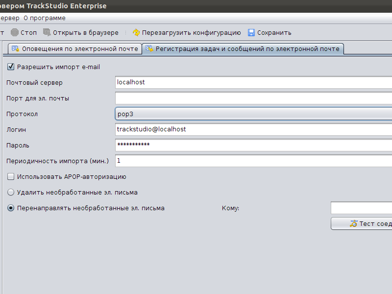
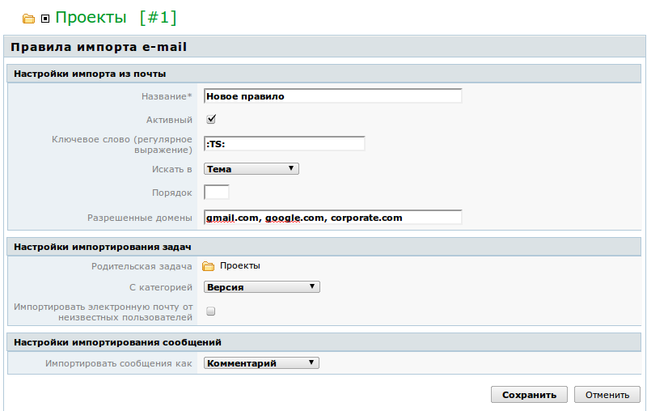

|
<< Click to Display Table of Contents >> Navigation: Rus > Руководство администратора > Как импортировать письма от пользователей в задачи |
Вы можете автоматически импортировать письма от ваших пользователей в систему TrackStudio в виде новых задач, либо комментариев к существующим.
Эту возможность нужно включить в Server Manager и заполнить необходимые поля: почтовый сервер, протокол, логин и пароль. Вы также можете указать периодичность обработки входящей почты и что делать с не прошедшими фильтры письмами (их можно удалять или перенаправлять на другой адрес).

Для того, чтобы пользователи могли отправлять задачи и сообщения в TrackStudio, у них должна быть учетная запись в системе и в ней должен быть указан почтовый адрес.
Затем перейдите в нужный проект и создайте правило импорта почты.

Укажите ключевое слово (это может быть и регулярное выражение). По этому ключу система будет отбирать письма, которые нужно импортировать. Порядок в правиле означает, в какой последовательности будут применяться правила импорта (их может быть несколько как для одного проекта, так и для разных). Обратите внимание, импортированы будут только письма от пользователей, имеющий доступ к указанному проекту.
Ключевое слово может размещаться либо в теме письма, либо в его теле, либо в почтовых заголовках (header). Вы можете также ограничить домены, почта с которых будет обрабатываться (например, чтобы защитить систему от спама).
Укажите категорию, с которой будет импортирована задача. У пользователей должно быть право создавать задачи с этой категорией. Если вы отметите, что нужно импортировать письма от неизвестных пользователей, система будет создавать задачи из писем от вашего имени (от имени автора правила импорта). Существует также иной способ создания задач, при котором для неизвестных пользователей будут создавать также учетные записи в системе и выдаваться права на задачу.
Если в заголовке импортируемого письма, удовлетворяющего правилу импорта, система встретит символ # и несколько цифр (например, #2124), она добавит сообщение в задачу с таким номером в виде операции. В правиле импорта вы должны указать, какая операция будет выполняться (например, "Комментарий").
Добавленные в письмо вложения будут аналогично приложены к задаче. Это удобно, например, для загрузки в задачи логов от пользователей.
С помощью комбинации правил импорта и правил оповещения вы можете управлять задачами в TrackStudio полностью через email-интерфейс.